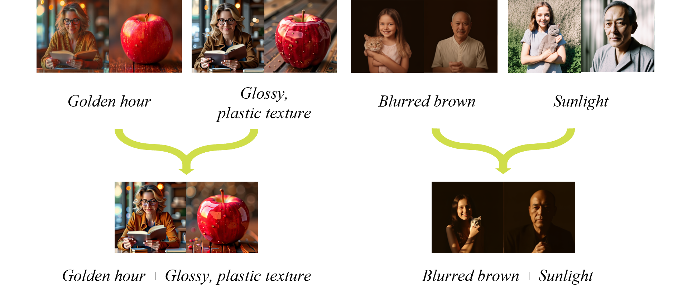
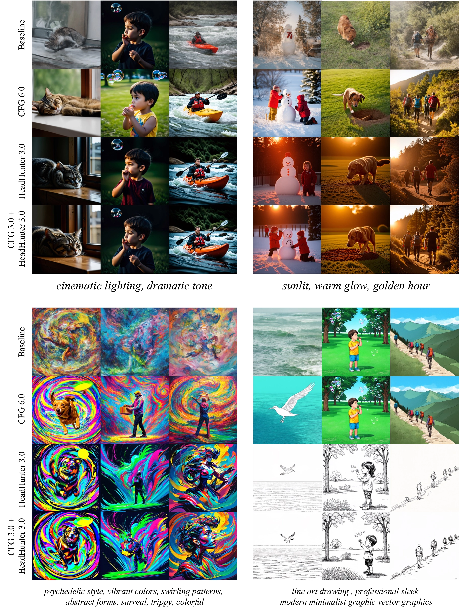
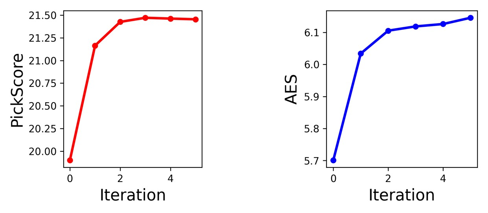

When attention perturbation guidance (e.g. PAG) is applied at the level of individual heads,
the resulting effects vary significantly across heads, with some exhibiting interpretable characteristics.
By HeadHunter framework, we can steer diffusion models more effectively by selecting and combining heads
🌟 Why HeadHunter?
- Fine-grained control: Each attention head specializes in different concepts (e.g., structure, lighting, texture, style). By targeting only the right heads to perturb, we can boost image quality or enhance specific styles.
- Compositional power: Multiple heads can be combined, letting us compose visual effects like “lighting + texture” or “geometry + style.” This creates a plug-and-play style control mechanism at inference time.
- Objective-aware guidance: HeadHunter works iteratively with arbitrary objective (human preference, style alignment, etc.). It automatically finds the best set of heads in an iterative manner to achieve the goal.
💓 Combinational property of head-level guidance
Each attention head specializes in different visual effects when perturbation guidance is applied
- 💡 One may capture lighting (e.g., golden hour glow).
- 🎨 Another may encode texture (e.g., glossy, plastic surface).
- 🌈 Others might emphasize color tones (e.g., warm brown) or shading (e.g., blurred effects).
When we combine heads, these effects naturally blend into richer outcomes
- 👉 Golden hour + glossy, plastic picture → a sunset-like scene with a reflective, polished texture.
- 👉 Blurred brown + sunlight → warm daylight infused with a soft, cinematic tone.

🎯 HeadHunter : Iterative head-search framework for boosting
We showcase that selecting heads step by step boost the style specified in the prompt, guiding the model toward stronger stylistic expression. Watch how the style intensifies with each iteration!
(Click for zoom-in)
🤨 So, is this better than CFG?
Results of applying head-level guidance (with the heads retrieved by HeadHunter) shows much better style-aligned results than using CFG alone!
(Click for zoom-in)

Quantitative Results
As iterations progress, more heads participate in perturbation guidance, leading to noticeable improvements in both style and quality metrics!

SoftPAG : Interpolation variant of PAG
PAG [1] provides guidance through identity perturbation, but overly strong perturbations often lead to issues such as oversaturation. To address this, SoftPAG introduces a method to control the strength of perturbation, thereby mitigating such problems.

[1] Self-Rectifying Diffusion Sampling with Perturbed-Attention Guidance, ECCV2024
Citation
If you use this work or find it helpful, please consider citing:
@inproceedings{ahnand,
title={Where and How to Perturb: On the Design of Perturbation Guidance in Diffusion and Flow Models},
author={Ahn, Donghoon and Kang, Jiwon and Lee, Sanghyun and Kim, Minjae and Jang, Wooseok and Min, Jaewon and Lee, Sangwu and Paul, Sayak and Kim, Seungryong},
booktitle={The Thirty-ninth Annual Conference on Neural Information Processing Systems}
}